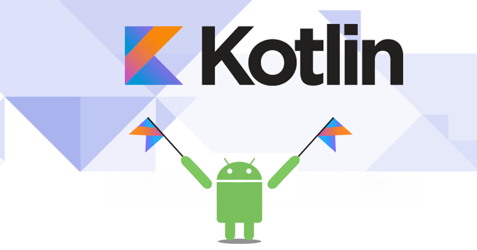
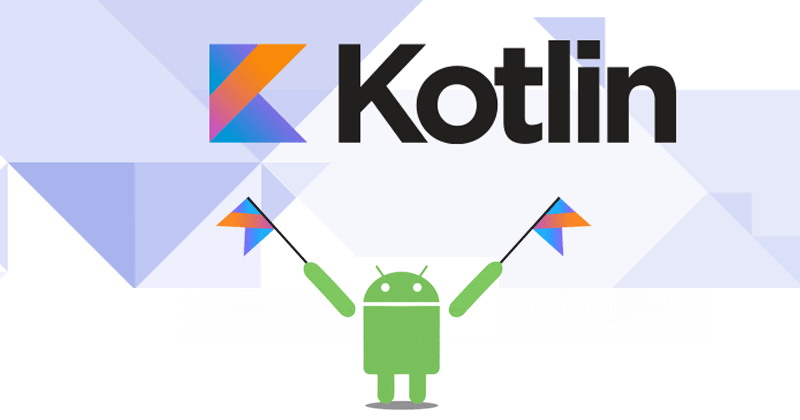
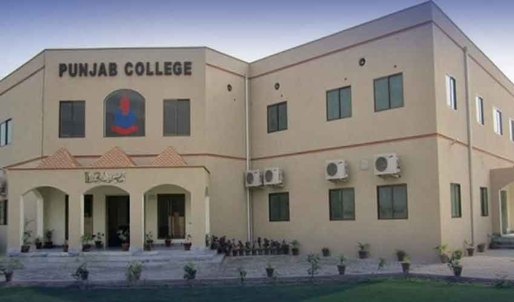
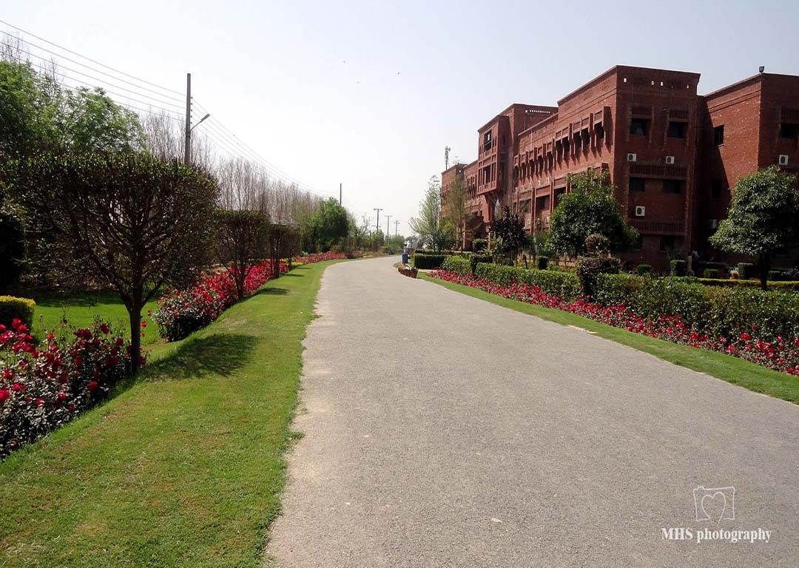

PUNJAB GROUP OF COLLAGE
In 2021, I have passed of intermediante in CS with 82% and Obtained marks is 897, I recommended my CS in Punjab College at Okara,Pakistan. I completed my CS in 2021 with a marks of 897/1000. Throughout my ICS, I gained proficiency in programming languages like C and Java, mastered OOP concepts, OS, and networking.


COMSATS univerity Sahiwal
After completing my ICS in Information Technology in 2021, I enrolled in the Bachelor of COMPUTER SCIENCE (CS) program in Information & Technology at COMSATS univerity. Currently pursuing this degree, I am set to complete it in July 2026. Throughout my BSCS DEGREE, I have Developed into advanced programming languages, mastered Data Structures and Algorithms (DSA), explored the intricacies of WEB development, ventured into Android development, and engaged with concepts of Artificial Intelligence (AI) and Machine Learning (ML). This comprehensive curriculum has equipped me with a diverse skill set and positioned me to thrive in the ever-evolving landscape of Information Technology.